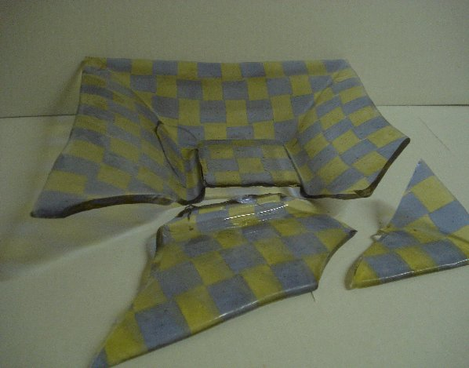

|  |
Kuvan vati oli slumpattu keraamiseen muottiin.
Lasi kutistuu j‰‰htyess‰ enemm‰n kuin keramiikka, joten
yleens‰ lasi irtoaa hyvin.
T‰ss‰ muotissa pohjan reunusksen takia muodostui keskelle alue,
jossa lasi kutistui keraamisen korokkeen ymp‰rille.
Kun kova materiaali ei joustanut puristuksessa, lasi halkeis portaan reunasta.
Oikea muotin muoto olisi sellainen jossa reunuksen sis‰puolella pohja kohoaakin loivasti. Silloin lasi kutistuessaan liukuu loivaa rinnett‰ ylemm‰ksi eij‰ stressi‰ muodostu.